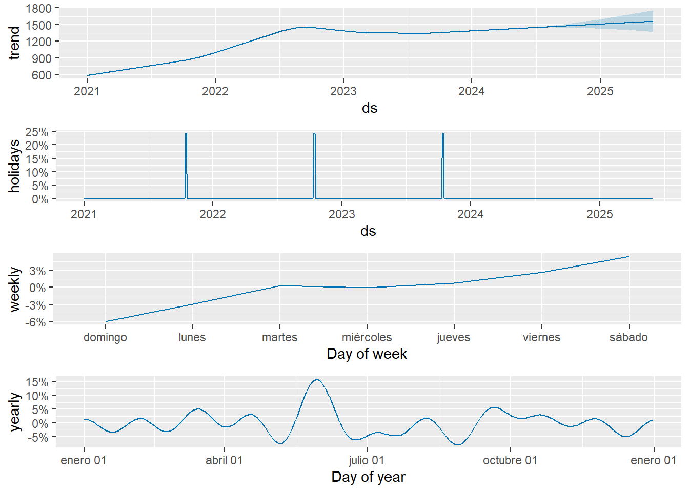
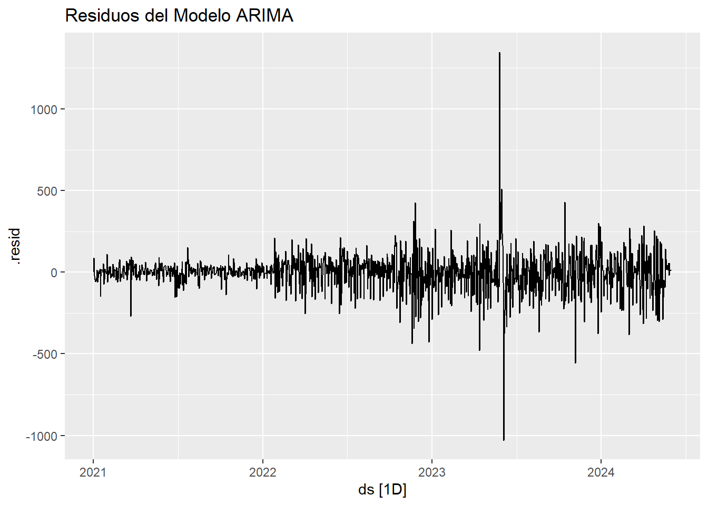
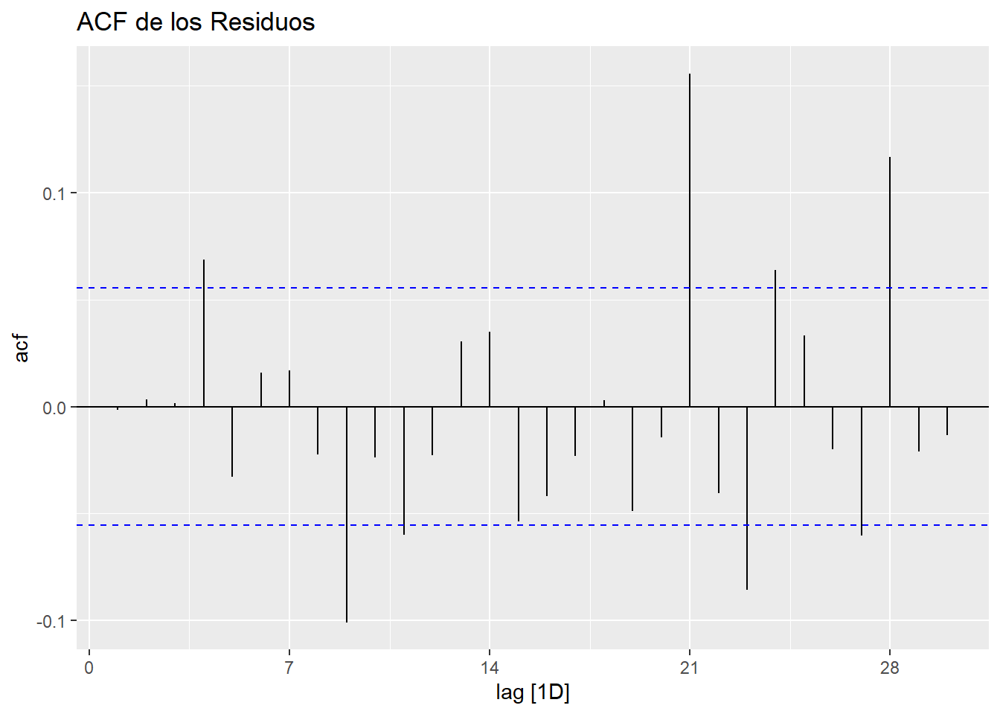

Capítulo 5 Análisis de Estacionariedad
5.1 Carga de Serie
Importamos la serie de tiempo del tráfico LTE y verificamos su rango de fechas
## x
## 1 648.99
## 2 747.42
## 3 698.03
## 4 650.74
## 5 610.65fecha_inicio <- as.Date("2021-01-01")
serie_tiempo <- ts(datos$x, start = c(format(fecha_inicio, "%Y"), format(fecha_inicio, "%j")), frequency = 365)Verificamos la fecha inicio y fecha fin
start_time <- start(serie_tiempo)
end_time <- end(serie_tiempo)
frequency <- frequency(serie_tiempo)
min_date <- as.Date(paste(start_time[1], start_time[2], sep="-"), "%Y-%j")
max_date <- as.Date(paste(end_time[1], (end_time[2]-1) / frequency * 365, sep="-"), "%Y-%j")
min_date## [1] "2021-01-01"## [1] "2024-05-30"5.2 Análisis
Dentro la imagen podemos observar lo siguiente
Observed:: Nos muestra la serie original , es decir la serie de tráfico LTE sin modificaciones.
Tred: En la tendencia nos muestra la eliminacion del ruido y estacionarie sin embargo se observan los picos de tráfico al final.
Seasonal:: En la Estacionariedad podemos observar un patrón claro y repetitivo , lo cual indica que existe estacionariedad en los datos del tráfico en esta de serie de tiempo.
Random: Este gráfico muestra residuales o fluctuaciones que nos se pueden explicar , ya que puede ser atípicos o ruido, para estos casos particulares en tráfico hay que hacer investigaciones de las causas de estas anomalias.
5.3 Diferenciacion y Logaritmos
Para poder realizar un ARIMA es importante tener estacionariedad , por eso debemos convertirlo en estacionaria por medio de una transformación de logaritmos o diferencias
5.3.1 Logaritmos
La función logarítmica es una función continua deja los mínimos y máximos bajo logaritmo, estabilizando la varianza .
Para el caso de logaritmos usamos la función “log”

Al ver la gráfica no podemos apreciar estacionariedad ya que se ven caídas y bajadas y su media es diferente de cero.
Verificamos si es estacionaria por medio de la prueba de “Dickey-Fuller” con la librería “adf”
Al ser una función logarítmica validamos los valores infinitos
non_finite_indices <- which(!is.finite(serielog))
#mostramos infinitos
if (length(non_finite_indices) > 0) {
print(non_finite_indices)
#Removemos valores infinitos
serielog_clean <- serielog[is.finite(serielog)]
} else {
serielog_clean <- serielog
}
adf_result <- adf.test(serielog_clean, alternative = "stationary")## Warning in adf.test(serielog_clean, alternative = "stationary"): p-value
## smaller than printed p-value##
## Augmented Dickey-Fuller Test
##
## data: serielog_clean
## Dickey-Fuller = -4.0059, Lag order = 10, p-value = 0.01
## alternative hypothesis: stationaryEl resultado de es p-value = 0.01 al ser mayor a 0.05 se puede determinar que es una serie Si estacionaria
Con logaritmo logramos conseguir Estacionariedad
5.3.2 Diferencias
Las diferencia son utilizadas para convertir una serie no estacionaria en estacionaria, este es muy importante para modelos de series de tiempo. Esto nos ayuda a calcular la diferencia entre valores consecutivos de la serie. Esto ayuda a eliminar tendencias,, hacer la serie estacionaria y simplifica el modelo
Antes de realizar las diferencias podemos ejecutar el comando “ndiffs” para saber cuantas diferencias necesitamos
## [1] 1El resultado es “1” diferencia para convertir la serie en estacionaria
seriedif=diff(serie_tiempo)
plot(seriedif,lty="dashed",col="red",main="Serie de Tiempo de Tráfico LTE")
Al ver la gráfica podemos apreciar que los datos están alrededor de la misma media , en este caso de “cero”
Para verificar si es estacionaria lo hacemos por medio de la prueba de “Dickey-Fuller” con la libreria “adf”
## Warning in adf.test(seriedif, alternative = "stationary"): p-value smaller than
## printed p-value##
## Augmented Dickey-Fuller Test
##
## data: seriedif
## Dickey-Fuller = -14.941, Lag order = 10, p-value = 0.01
## alternative hypothesis: stationaryEl resultado de es p-value = 0.01 al ser menor a 0.05 se puede determinar que es una serie que si es estacionaria
Podemos validar si necesitamos mas diferenciaciones con el comando “ndiffs”
## [1] 0El resultado es cero por lo cuál no necesitamos más diferenciaciones
Análisis de auto correlación
par(mfrow=c(2,2),mar=c(4,4,4,1)+.1)
plot(serie_tiempo,ylab="Tráfico LTE")
Acf(serie_tiempo,main="Serie No Estacionaria")
plot(seriedif)
acf(seriedif,main="Serie Estacionaria")
Podemos observar que el primer gráfico ” no es estacionario” tiene una tendencia , la cual es verificada por la auto correlación de la derecha . el cual supera el umbral de líneas azules (+/-)1.96
En los gráficos inferiores se puede ver una media constante , varianza constante, y se puede ver en la gráfica de la derecha la comprobación de auto correlación donde se visualiza que no supera el umbral de (+/-)1.96
5.4 Método de Holt Winters
5.4.1 Preparación de los datos
Para hacer predicciones utilizando datos con tendencia y estacionalidad, recurrimos al método estacional de Holt-Winters . Este método se puede implementar con una estructura “Aditiva” o una estructura “Multiplicativa”
El modelo aditivo se utiliza mejor cuando la tendencia estacional es la misma magnitud en todo el conjunto de datos, mientras que el modelo multiplicativo cuando la magnitud de la estacionalidad cambia a medida que aumenta o disminuye el tiempo el tiempo

Al ver la gráfica al tener una periodicidad diaria no es claro si usar el modelo aditivo o multiplicativo por lo cual evaluamos la homocedasticidad de los residuos .
5.4.2 Selección del Modelo
Modelo Aditivo

Modelo Multiplicativo
# Descomposición Multiplicativa
modelo_multiplicativo <- decompose(serie_tiempo, type="multiplicative")
plot(modelo_multiplicativo)
Al revisar los dos modelos en la parte de residuos podemos ver que el Modelo Multiplicativo es mas viable ya que aparecen mas aleatorios y con menos patrones sistemáticos que el modelo aditivo
Para volver a verificar vamos a usa la descomposición STL (Seasonal and Trend decomposition using Loess) y un modelo ETS(Error, Trend , Seasonality )

En la gráfica la linea negra representa los datos observados , la linea azul y las bandas al final representan los pronósticos y sus intervalos de confianza , la predicción muestra picos y cambios abruptos lo que sugiere una variabilidad de los datos lo que podría estar relacionado con el nivel dela serie . El modelo utilizado es una ETS(M,N,N) (Multiplicativo ,Sin Tendencia(N), Sin estacionalidad (N) )
Aplicamos el método Holt-Winters especificando el un modelo multiplicativo

La linea representa los datos originales de la serie de tiempo, la linea roja indica la serie ajustada obtenida desde el método de Holt-Winters , el cual se puede ver como se suaviza las fluctuaciones ,el modelo se centra en la tendencia general y los patrones de estaciones regulares
5.4.3 Predicción
Realizamos la predicción con periodicidad diaria
Para poder revertir la diferenciación tomamos el ultimo valor de la serie original “ultimo_valor_original antes de la diferenciación . En la variable”predicciones_revertidas”, reconvertimos las predicciones diferenciada al nivel original utilizando la sum acumulada
start_predicciones <- end(serie_tiempo)[1] + 1 / frequency(serie_tiempo)
predicciones_original_ts <- ts(predicciones_hw$mean, start = start_predicciones, frequency = frequency(serie_tiempo))plot(serie_tiempo, xlim = c(start(serie_tiempo)[1], end(predicciones_original_ts)[1]), ylim = range(c(serie_tiempo, predicciones_original_ts)),
main = "Serie Temporal Original y Predicciones", ylab = "Valores", xlab = "Tiempo")
lines(predicciones_original_ts, col = "blue")
legend("topright", legend = c("Serie Original", "Predicciones"),
col = c("black", "blue"), lty = 1)Al mirar el Point Forecast a lo largo del tiempo se ver que aumenta y disminuyee los valores predichos , lo que podría indicar que no hay una tendencia clara en la serie_temporal
Al ver la predicción podemos ver entre más ampliamos la confianza se amplia el rango y y aumenta la incertidumbre de los pronósticos que cubren el valor real , con esto se puede hacer un análisis de riesgos para la empresa
5.4.4 Métricas de error
** Lectura de Alpha, Beta y Gama**
## Alpha (nivel): 0.5921534## Beta (tendencia): 0## Gamma (estacionalidad): 0.6036311# Verificar si los parámetros son adecuados
if (hw$alpha == 0 || hw$beta == 0) {
cat("Advertencia: Los parámetros alpha o beta son cero, lo que puede indicar que el modelo no está capturando adecuadamente el nivel o la tendencia.\n")
}## Advertencia: Los parámetros alpha o beta son cero, lo que puede indicar que el modelo no está capturando adecuadamente el nivel o la tendencia.Alpha: controla la suavización del nivel de la serie temporal ,el modelo esta actualizando 0.592 cada nueva observaciónva tomar valores pasados
Beta controla la visualización de la tendencia de la serie de tiempo, El valor al ser cero(0) indica que no esta capturando la tendencia en la serie temporal
Gama controla la suavización de la componente estacional de la serie temporal, al estar cercano a 0.5 representa que esta capturando la estacionalidad
Componentes de modelo
## Time-Series [1:882, 1:4] from 2022 to 2024: 740 892 978 946 954 ...
## - attr(*, "dimnames")=List of 2
## ..$ : NULL
## ..$ : chr [1:4] "xhat" "level" "trend" "season"
## NULLComponente de Nivel
Este gráfico se ajusta para ver la tendencia general excluyendo la estacionalidad y los valores irregulares

Al ver la gráfica podemos ver que empieza en 600 pero sigue creciendo hasta 2500 , lo que demuestra una tendencia creciente. También se denotan variaciones y periodos donde tiene incrementos y descensos temporales , por ejemplo para mediados de 2023 e inicios de 2024 se observa una volatilidad , estos cambios son importantes investigarlos ya pueden ser factores externos
Componente de tendencia
Este componente nos indica como evoluciona la serie temporal sin tomar las variaciones estacionales
La linea horizontal nos muestra que la tendencia es constante a lo largo del tiempo , no se observan cambios ,esto indicaría que los cambios vistos en los Componentes de nivel son estacionales o irregulares, no tendenciales.
Componente de estacionalidad
Este componente nos muestras las variaciones periódicas que ocurren en los intervalos regulares
El gráfico muestra cambios claros a lo largo del tiempo , evidenciando patrones estacionales. La amplitud de los cambios oscilan entre 0.7 y 1.3 , la subidas y bajadas reflejan periódicos específicos del año donde se espera que en cierto periodo suba o baje el tráfico , para nuestro caso puntual serian los periodos donde se realizan las fiestas y ferias. Con este componente se puede realizar el diseño e implementación de mejoras de la red previniendo los periodos de alto tráfico
Verificación
Prueba de Ljung-Box: l esta herramienta nos sirve para verificar si hay auto correlaciones significativas en una serie de residuos en distintos retrasos
residuos_hw <- residuals(hw)
ljung_box_result <- Box.test(residuos_hw, type = "Ljung-Box")
print(ljung_box_result)##
## Box-Ljung test
##
## data: residuos_hw
## X-squared = 2.979, df = 1, p-value = 0.08435Dado que el valor -p es mayor que 0.05 no hay evidencia que hay auto correlación entre los residuos, lo que se puede considera como ruido blanco, por lo cual se conisdera que esta capturano bien la estacionariedad.
Se realiza la prueba de Ljung-Box con un mayor de retrasos de 30 podría proporcionar una visión mas clara de la estructura de auto correlación en los residuos
residuos_hw2 <- residuals(hw)
ljung_box_result_30 <- Box.test(residuos_hw2, type = "Ljung-Box", lag = 30)
print(ljung_box_result_30)##
## Box-Ljung test
##
## data: residuos_hw2
## X-squared = 283.53, df = 30, p-value < 2.2e-16Al ser el valor -p menor a 0.05 se rechaza la hipótesis nula de que no hay auto correlaciones en los residuos del modelo a los 30 retrasos lo que implica que el modelo no esta capturando la estructura actual de los datos
5.4.5 Conclusión
EL metodo Holt-Winters al revisar el valor de Beta al ser cero(0) indica que no esta capturando la tendencia en la serie temporal lo que pudimos confirmar observar al descomponer el modelo hw en la cual no existía tendencia. El modelo no es confiable ya que al aplicar la prueba de residuos de Ljung_box rechaza la Hipotesis nula de no tener autocorrelacion de los residuos por lo cual no permite captar la estructura de los datos ,
5.5 ARIMA
En el apartado 5.3.2 podriamos ver que con (1) diferencia ,si se podia apreciar estacionariedad, se puede ver una media constante , varianza constante. Verificamos si es estacionaria por medio de la prueba de “Dickey-Fuller” , el cual su p-value = 0.01, al ser menor a 0.05 se puede determinar que la serie era estacionaria , a continuación podemos explorar mas gráficos como el ACF y el PACF:
ACF
Este gráfico nos muestra la correlación en la serie (seriedif) y sus retrasos

En este caso al ver el primer retraso seguido de barras que se vuelven insignificantes lo que con lleva aun modelo de media móvil (1)
PACF
Este mide la correlación parcial entre la serie y sus retrasos , controlando los valores de los retrasos intermedios

En esta gráfica observamos que el primer retraso muestra una correlación parcial significativa negativa que luego cae a cero ,lo que puede sugerir un AR(1)
5.5.1 ARIMA Manual
Vamos a realizar varios modelos ARIMA teniendo como precedente que según el análisis anterior de diferencias(1) , ACF(1) y el PACF(1) , por medio del análisis de AIC y BIC seleccionaremos el mejor modelo
# Ajustar los modelos ARIMA
arima1 <- Arima(serie_tiempo, order = c(0, 1, 0))
arima2 <- Arima(serie_tiempo, order = c(0, 1, 0))
arima3 <- Arima(serie_tiempo, order = c(1, 0, 0))
arima4 <- Arima(serie_tiempo, order = c(2, 2, 1))
arima5 <- Arima(serie_tiempo, order = c(0, 1, 1))
arima6 <- Arima(serie_tiempo, order = c(2, 2, 0))
arima7 <- Arima(serie_tiempo, order = c(2, 1, 0))
arima8 <- Arima(serie_tiempo, order = c(3, 2, 2))
arima9 <- Arima(serie_tiempo, order = c(1, 1, 1))
arima10 <- Arima(serie_tiempo, order = c(1, 1, 2))
arima11 <- Arima(serie_tiempo, order = c(1, 1, 3))
arima12 <- Arima(serie_tiempo, order = c(0, 1, 2))
arima13 <- Arima(serie_tiempo, order = c(1, 1, 0))
arima14 <- Arima(serie_tiempo, order = c(3, 1, 1))
arima15 <- Arima(serie_tiempo, order = c(2, 1, 2))
# Función para realizar el test de Ljung-Box y calcular AIC y BIC
eval_model <- function(model) {
residuos <- residuals(model)
ljung_box_result <- Box.test(residuos, lag = 30, type = "Ljung-Box")
aic <- AIC(model)
bic <- BIC(model)
return(list(ljung_box = ljung_box_result, AIC = aic, BIC = bic))
}
# Evaluar cada modelo
results <- list(
arima1 = eval_model(arima1),
arima2 = eval_model(arima2),
arima3 = eval_model(arima3),
arima4 = eval_model(arima4),
arima5 = eval_model(arima5),
arima6 = eval_model(arima6),
arima7 = eval_model(arima7),
arima8 = eval_model(arima8),
arima9 = eval_model(arima9),
arima10 = eval_model(arima10),
arima11 = eval_model(arima11),
arima12 = eval_model(arima12),
arima13 = eval_model(arima13),
arima14 = eval_model(arima14),
arima15 = eval_model(arima15)
)
# Comparar AIC y BIC de los modelos
aic_values <- sapply(results, function(res) res$AIC)
bic_values <- sapply(results, function(res) res$BIC)
cat("\nComparación de AIC:\n")##
## Comparación de AIC:## arima1 arima2 arima3 arima4 arima5 arima6 arima7 arima8
## 15705.50 15705.50 15674.01 15565.15 15561.43 16130.79 15566.75 15492.73
## arima9 arima10 arima11 arima12 arima13 arima14 arima15
## 15515.68 15495.67 15537.07 15536.79 15611.74 15493.50 15494.57##
## Comparación de BIC:## arima1 arima2 arima3 arima4 arima5 arima6 arima7 arima8
## 15710.63 15710.63 15689.40 15585.65 15571.69 16146.17 15582.14 15523.49
## arima9 arima10 arima11 arima12 arima13 arima14 arima15
## 15531.06 15516.18 15562.71 15552.17 15622.00 15519.14 15520.21Realizando varios modelos encontramos que el modelo “arima14” es el mejor con AR(3), DIFF(1) y MA(1) ,ya que al verificar AIC y BIC nos pueden definir que tan bien se ajusta el modelo a los datos ,y la otra evalúa su complejidad, entre mas sencillo el modelo mejor, ya que entre mas parámetros puede ocasionar más sobre ajuste.
El Arima indicaria lo siguiente: AR:Se necesita un componentes AR(3), lo que indica que los datos pasados tienen efecto sobre los valores futuros **Diferenciación*: Se necesita una (1) diferenciación para hacer la serie estacionaria . Esta fue la observación realizada anteriormente con dos diferencias a la serie original Media Móvil: Indica que con (1) media móvil seria suficiente, ya que maneja la influencia de error de predicción de penúltimo periodo
El modelo se puede confirmar ejecutando el Auto Arima
## Series: serie_tiempo
## ARIMA(3,1,1) with drift
##
## Coefficients:
## ar1 ar2 ar3 ma1 drift
## 0.5726 0.0767 0.0925 -0.9743 0.6710
## s.e. 0.0294 0.0327 0.0290 0.0079 0.3499
##
## sigma^2 = 14608: log likelihood = -7740.21
## AIC=15492.43 AICc=15492.5 BIC=15523.2Diagnóstico del Modelo
Residuos estandar: Se pueden ver los residuos distribuidos aleatoriamente alrededor de cero , con algunos outlier Residuos ACF : Todas las autocorrelaciones estan dentro de la banda de confianza , lo que significa que no hay autocorrelación de residuos, es decir que esta capturando bien la serie temporal P values de Ljung-Box: Algunos valores están por encima de la línea de significancia , lo que se tendria confirmar ya que hay observaciones debajo del umbral
Pronóstico
Como podemos ver que como los valores predicho cambian através del tiempo
# Crear un objeto ts para las predicciones
start_predicciones <- end(serie_tiempo)[1] + 1 / frequency(serie_tiempo)
predicciones_arima_ts <- ts(predicciones_arima$mean, start = start_predicciones, frequency = frequency(serie_tiempo))
# Graficar las predicciones junto con la serie original
plot(serie_tiempo, xlim = c(start(serie_tiempo)[1], end(predicciones_arima_ts)[1]), ylim = range(c(serie_tiempo, predicciones_arima_ts)),
main = "Serie Temporal Original y Predicciones", ylab = "Valores", xlab = "Tiempo")
lines(predicciones_arima_ts, col = "blue")
legend("topright", legend = c("Serie Original", "Predicciones"),
col = c("black", "blue"), lty = 1)Métricas de Error
Validación de residuos
En este gráfico podemos observar que la media es igual a cero

Prueba de Lgung-Box
##
## Box-Ljung test
##
## data: residuals(arima14)
## X-squared = 0.031867, df = 1, p-value = 0.8583Prueba de Ljung-Box la Hipótesis nos sirve para saber si hay Ruido Blanco ,en este caso el valor(0.8521) es mayor a (0.5), entonces si hay Ruido Blanco, por lo cual se ajusta bien el modelo
Prueba de Lgung-Box con Retardos
ljung_box_result_arima <- Box.test(residuos_arima, lag = 30, type = "Ljung-Box")
print(ljung_box_result_arima)##
## Box-Ljung test
##
## data: residuos_arima
## X-squared = 268.12, df = 30, p-value < 2.2e-16Prueba de Ljung-Box la Hipótesis en este caso con 30 retardos el valor de p-values es menor a 0.05 por lo cual tiene una auto correlación significativa de lo residuos
Se realiza exploración de todos los ARIMAS propuestos realizando las pruebas de Ljung-Box
eval_model <- function(model) {
residuos <- residuals(model)
ljung_box_result <- Box.test(residuos, lag = 30, type = "Ljung-Box")
aic <- AIC(model)
bic <- BIC(model)
return(list(ljung_box = ljung_box_result, AIC = aic, BIC = bic))
}
# Imprimir resultados
for (i in 1:length(results)) {
cat("\nModelo ARIMA", names(results)[i], "\n")
print(results[[i]]$ljung_box)
cat("AIC:", results[[i]]$AIC, "\n")
cat("BIC:", results[[i]]$BIC, "\n")
}##
## Modelo ARIMA arima1
##
## Box-Ljung test
##
## data: residuos
## X-squared = 498.26, df = 30, p-value < 2.2e-16
##
## AIC: 15705.5
## BIC: 15710.63
##
## Modelo ARIMA arima2
##
## Box-Ljung test
##
## data: residuos
## X-squared = 498.26, df = 30, p-value < 2.2e-16
##
## AIC: 15705.5
## BIC: 15710.63
##
## Modelo ARIMA arima3
##
## Box-Ljung test
##
## data: residuos
## X-squared = 447.67, df = 30, p-value < 2.2e-16
##
## AIC: 15674.01
## BIC: 15689.4
##
## Modelo ARIMA arima4
##
## Box-Ljung test
##
## data: residuos
## X-squared = 306.55, df = 30, p-value < 2.2e-16
##
## AIC: 15565.15
## BIC: 15585.65
##
## Modelo ARIMA arima5
##
## Box-Ljung test
##
## data: residuos
## X-squared = 341.65, df = 30, p-value < 2.2e-16
##
## AIC: 15561.43
## BIC: 15571.69
##
## Modelo ARIMA arima6
##
## Box-Ljung test
##
## data: residuos
## X-squared = 540.08, df = 30, p-value < 2.2e-16
##
## AIC: 16130.79
## BIC: 16146.17
##
## Modelo ARIMA arima7
##
## Box-Ljung test
##
## data: residuos
## X-squared = 305.87, df = 30, p-value < 2.2e-16
##
## AIC: 15566.75
## BIC: 15582.14
##
## Modelo ARIMA arima8
##
## Box-Ljung test
##
## data: residuos
## X-squared = 267.02, df = 30, p-value < 2.2e-16
##
## AIC: 15492.73
## BIC: 15523.49
##
## Modelo ARIMA arima9
##
## Box-Ljung test
##
## data: residuos
## X-squared = 312.81, df = 30, p-value < 2.2e-16
##
## AIC: 15515.68
## BIC: 15531.06
##
## Modelo ARIMA arima10
##
## Box-Ljung test
##
## data: residuos
## X-squared = 304.25, df = 30, p-value < 2.2e-16
##
## AIC: 15495.67
## BIC: 15516.18
##
## Modelo ARIMA arima11
##
## Box-Ljung test
##
## data: residuos
## X-squared = 291.73, df = 30, p-value < 2.2e-16
##
## AIC: 15537.07
## BIC: 15562.71
##
## Modelo ARIMA arima12
##
## Box-Ljung test
##
## data: residuos
## X-squared = 275.86, df = 30, p-value < 2.2e-16
##
## AIC: 15536.79
## BIC: 15552.17
##
## Modelo ARIMA arima13
##
## Box-Ljung test
##
## data: residuos
## X-squared = 454.51, df = 30, p-value < 2.2e-16
##
## AIC: 15611.74
## BIC: 15622
##
## Modelo ARIMA arima14
##
## Box-Ljung test
##
## data: residuos
## X-squared = 268.12, df = 30, p-value < 2.2e-16
##
## AIC: 15493.5
## BIC: 15519.14
##
## Modelo ARIMA arima15
##
## Box-Ljung test
##
## data: residuos
## X-squared = 286.29, df = 30, p-value < 2.2e-16
##
## AIC: 15494.57
## BIC: 15520.21Al revisar todos los modelos , se confirman que todos tiene una auto correlación significativa de residuos
Métricas de error
n <- length(serie_tiempo)
residuos_arima14 <- residuals(arima14)
length_residuos <- length(residuos_arima14)
length_serie <- length(serie_tiempo)
if (length_residuos == length_serie) {
mse <- mean(residuos_arima14^2)
rmse <- sqrt(mse)
mae <- mean(abs(residuos_arima14))
mape <- mean(abs(residuos_arima14 / serie_tiempo)) * 100
r2 <- 1 - (sum(residuos_arima14^2) / sum((serie_tiempo - mean(serie_tiempo))^2))
} else {
# Ajustar longitudes si no coinciden
residuos_arima14_adj <- residuos_arima14[1:n]
serie_tiempo_adj <- serie_tiempo[1:n]
mse <- mean(residuos_arima14_adj^2)
rmse <- sqrt(mse)
mae <- mean(abs(residuos_arima14_adj))
mape <- mean(abs(residuos_arima14_adj / serie_tiempo_adj)) * 100
r2 <- 1 - (sum(residuos_arima14_adj^2) / sum((serie_tiempo_adj - mean(serie_tiempo_adj))^2))
}
cat("MSE:", mse, "\n")## MSE: 14575.37## RMSE: 120.7285## MAE: 79.9161## MAPE: 6.665742 %## R^2: 0.8667312Conclusiones
Si bien el modelo arima puede explicar el 86.6% de la variabilidad(R2) y sy porcentaje de error del 6.5% la prueba de Ljung-Box nnos confirma que hay una alta auto correlación entre los residuos
5.5.2 ARIMA con Drift
Incluimos al modelo de ARIMA el parámetro Drift el cual es la inclusión de una constante que representa una tendencia lineal en la serie temporal después de la diferenciación. Al incluirlo , el modelo puedo capturar esa tendencia residual mejorando la precisión del modelo
Utilizamos el modelo con mejores resultado de AIC y BIC anteriormente estudiados
modelo_arima_drift <- Arima(serie_tiempo, order=c(3,1,1), include.drift=TRUE)
summary(modelo_arima_drift)## Series: serie_tiempo
## ARIMA(3,1,1) with drift
##
## Coefficients:
## ar1 ar2 ar3 ma1 drift
## 0.5726 0.0767 0.0925 -0.9743 0.6710
## s.e. 0.0294 0.0327 0.0290 0.0079 0.3499
##
## sigma^2 = 14608: log likelihood = -7740.21
## AIC=15492.43 AICc=15492.5 BIC=15523.2
##
## Training set error measures:
## ME RMSE MAE MPE MAPE MASE
## Training set -0.1302256 120.5735 79.07216 -0.7361409 6.618367 0.2176111
## ACF1
## Training set -0.003271852## Series: serie_tiempo
## ARIMA(3,1,1) with drift
##
## Coefficients:
## ar1 ar2 ar3 ma1 drift
## 0.5726 0.0767 0.0925 -0.9743 0.6710
## s.e. 0.0294 0.0327 0.0290 0.0079 0.3499
##
## sigma^2 = 14608: log likelihood = -7740.21
## AIC=15492.43 AICc=15492.5 BIC=15523.2Diagnostico del modelo

Residuos estandar: Se pueden ver los residuos distribuidos aleatoriamente alrededor de cero , con algunos outlier
Residuos ACF: Todas las autocorrelaciones estan dentro de la banda de confianza , lo que significa que no hay autocorrelación de residuos, es decir que esta capturando bien la serie temporal
P values de Ljung-Box: Los valores estan por encima de la línea de significancia , lo que indica que los residuos no tienen autocorrelación, por lo tanto el modelo es adecuado
5.5.3 Métricas de error
Validación de residuos
En este gráfico podemos observar que la media es igual a cero
Prueba de Ljung-Box
##
## Box-Ljung test
##
## data: residuals(modelo_arima_drift)
## X-squared = 0.013381, df = 1, p-value = 0.9079Prueba de Lgun Box la Hipótesis nos sirve para saber si hay Ruido Blanco ,si el valor(0.6979) es mayor a (0.5), entonces si hay Ruido Blanco, por lo cual se ajusta bien el modelo
Prueba de Ljung-Box con Retardos
ljung_box_result_arima <- Box.test(residuos_arima_drift, lag = 30, type = "Ljung-Box")
print(ljung_box_result_arima)##
## Box-Ljung test
##
## data: residuos_arima_drift
## X-squared = 266.25, df = 30, p-value < 2.2e-16Prueba de Ljung-Box la Hipótesis en este caso con 30 retardos el valor de p-values es menor a 0.05 por lo cual tiene una auto correlación significativa de lo residuos
Pronóstico
# Pronóstico utilizando el modelo ARIMA con drift
pronostico_arima_drift <- forecast(modelo_arima_drift, h=150)
#pronostico_arima_drift
plot(pronostico_arima_drift)
Conclusiones
Al incluir el parámetro drift¨ pudo capturar la tendencia residual mejorando la precisión el el modelo ARIMA(3,1,1), pero la prueba de Ljung-Box nos confirma que hay una alta auto correlación entre los residuos igual que el modelo anterior
5.6 Facebook Prophet
Usaremos la librería Prophet esta herramienta fue desarrollada por Facebook, el cual se basa en un modelo aditivo , donde las tendencias no lineales se ajustan con la estacionariedad diaria, semanal y anual teniendo en cuenta los días festivos.
5.6.1 Carga y preparación de datos
Cargamos los datos desde data_sitio.csv para incluir las columnas de ferias y fiestas “FIESTAS” .
Para preparar los datos para usar la librería Prophet colocando la columna “M_FECHA_DIA” en “ds” y la variable a predecir en este caso “PAYLOAD 4G” en la variable “y”
data_sitio_fiesta <- read.csv("data_sitio_smoothed.csv", sep = ",")
data_sitio_fiesta$M_FECHA_DIA <- as.Date(data_sitio_fiesta$M_FECHA_DIA)
data_sitio_fiesta <- data_sitio_fiesta[order(data_sitio_fiesta$M_FECHA_DIA), ]
df <- data_sitio_fiesta %>%
select(M_FECHA_DIA, PAYLOAD_4G_smoo_mean, FIESTA) %>%
rename(ds = M_FECHA_DIA, y = PAYLOAD_4G_smoo_mean)
head(df,5)## ds y FIESTA
## 1 2021-01-01 648.99 0
## 2 2021-01-02 747.42 0
## 3 2021-01-03 698.03 0
## 4 2021-01-04 650.74 0
## 5 2021-01-05 610.65 05.6.2 Alistamiento de datos para el modelo
Definimos los festivos para que la librería Prophet para aplicar los efectos especiales durante las festividades, para los parámetros “lower_window=0” lo usamos para indicar que la festividad empieza el mismo día y “upper_window=1” finaliza el día siguiente
5.6.3 Creación de modelo
Creamos el modelo teniendo en cuenta los festivos incluidos en “holidays” , y definimos que no tenemos estacionalidad horaria , ya que la mínima expresión en fechas es el día entero al no tener fracción deshabilitamos “daily.seasonality”
model_prophet <- prophet(holidays = holidays, daily.seasonality = FALSE ,weekly.seasonality = TRUE,yearly.seasonality = TRUE, changepoint.prior.scale = 0.05, # Ajustar sensibilidad a los puntos de cambio
seasonality.mode = 'multiplicative' # Cambiar a modo multiplicativo si es más adecuado
)
model_prophet <- fit.prophet(model_prophet, df)5.6.4 Pronóstico
Creamos un dataset con fechas futuras con los mismos parámetros de festividades inicíales y las incluimos en el pronóstico 365 días
futuro <- make_future_dataframe(model_prophet, periods = 365)
# Añadir las futuras festividades
future_holidays <- data.frame(
holiday = 'fiesta',
ds = as.Date(c('2024-10-10', '2024-10-11', '2024-10-12', '2024-10-13', '2024-10-14')),
lower_window = 0,
upper_window = 1
)
futuro <- bind_rows(futuro, future_holidays)
pronostico <- predict(model_prophet, futuro)
head(pronostico,5)## ds trend fiesta fiesta_lower fiesta_upper holidays holidays_lower
## 1 2021-01-01 584.3153 0 0 0 0 0
## 2 2021-01-02 585.2856 0 0 0 0 0
## 3 2021-01-03 586.2560 0 0 0 0 0
## 4 2021-01-04 587.2263 0 0 0 0 0
## 5 2021-01-05 588.1966 0 0 0 0 0
## holidays_upper multiplicative_terms multiplicative_terms_lower
## 1 0 0.03951866 0.03951866
## 2 0 0.06733707 0.06733707
## 3 0 -0.04699150 -0.04699150
## 4 0 -0.01770415 -0.01770415
## 5 0 0.01261176 0.01261176
## multiplicative_terms_upper weekly weekly_lower weekly_upper yearly
## 1 0.03951866 0.025957209 0.025957209 0.025957209 0.013561455
## 2 0.06733707 0.053659128 0.053659128 0.053659128 0.013677944
## 3 -0.04699150 -0.059994514 -0.059994514 -0.059994514 0.013003011
## 4 -0.01770415 -0.029273889 -0.029273889 -0.029273889 0.011569736
## 5 0.01261176 0.003178204 0.003178204 0.003178204 0.009433552
## yearly_lower yearly_upper additive_terms additive_terms_lower
## 1 0.013561455 0.013561455 0 0
## 2 0.013677944 0.013677944 0 0
## 3 0.013003011 0.013003011 0 0
## 4 0.011569736 0.011569736 0 0
## 5 0.009433552 0.009433552 0 0
## additive_terms_upper yhat_lower yhat_upper trend_lower trend_upper yhat
## 1 0 422.8304 773.8452 584.3153 584.3153 607.4067
## 2 0 437.0454 820.3316 585.2856 585.2856 624.6971
## 3 0 356.3968 746.6883 586.2560 586.2560 558.7069
## 4 0 380.5374 771.4090 587.2263 587.2263 576.8299
## 5 0 397.2135 773.5522 588.1966 588.1966 595.6148Linea Azul:: prediccion de Payload 4G, la cual nos muestra una tendencia ascendente hasta 2023 , despues de este año se estabiliza
Banda Azul Clara: Estas bandas corresponde al nivel de confianza que normalmente es del (80% al 95%)
Puntos Negros: Valores reales de Payload
Lineas Rojas: son los Changepoint o puntos de cambio detectados por el modelo Prophet,son puntos donde el modelo detecta un cambio de tendencia de Payload 4G
Puntos negros: son los valores reales de Payload 4g, nos permite visualmente comparar las predicciones del modelo , con los observados
Visualización de resultados
## Warning: Removed 24267 rows containing missing values or values outside the scale range
## (`geom_vline()`).
5.6.5 Descomposición

Trend: La tendencia muestra como el “PAYLOAD 4G” aumenta a lo largo del tiempo , desde el 2021 al 2023 hay una tendencia creciente , luego en 2023 se estabiliza
Holydays: Este gráfico muestra el impacto de los festivo en el tráfico. Se ve un impacto en significativo en cada año .
Weekly:Muestra como en los días finales de la semana aumenta el tráfico, mientras que los primeros son los más bajos.
Yearly Este gráfico muestra que hay mayor tráfico los meses de Junio y Octubre, mientras que Enero y Marzo tienen menor tráfico
5.6.6 Validación con Modelo de Entrenamiento y Prueba
Particionamos los datos de entrenamiento de 01-01-2021 hasta 31-12-2022 y los de pruebas desde el 01-01-2023 a 01-05-2024
# Dividir los datos en conjunto de entrenamiento y prueba
train <- df %>% filter(ds < as.Date("2023-01-01"))
test <- df %>% filter(ds >= as.Date("2023-01-01"))Creamos un modelo para el conjunto de entrenamiento
model_train <- prophet(
holidays = holidays,
yearly.seasonality = TRUE,
weekly.seasonality = TRUE,
daily.seasonality = FALSE,
changepoint.prior.scale = 0.05, # Ajustar sensibilidad a los puntos de cambio
seasonality.mode = 'multiplicative' # Cambiar a modo multiplicativo si es más adecuado
)
model_train <- fit.prophet(model_train, train)Hacemos las predicciones del conjunto de prueba
# Hacer predicciones para el conjunto de prueba
future_test <- make_future_dataframe(model_train, periods = nrow(test))
forecast_test <- predict(model_train, future_test)Unimos las predicciones al conjunto de prueba
validation <- test %>%
left_join(forecast_test %>% select(ds, yhat), by = "ds") %>%
mutate(residual = y - yhat)Métricas de error
# Calcular las métricas de error
actual_p <- validation$y
predicted_p <- validation$yhat
mae <- mean(abs(actual_p - predicted_p), na.rm = TRUE)
mse <- mean((actual_p - predicted_p)^2, na.rm = TRUE)
rmse <- sqrt(mse)
print(sprintf("RESULTADO MAE: %.4f", mae))## [1] "RESULTADO MAE: 158.5845"## [1] "RESULTADO MSE: 58293.2720"## [1] "RESULTADO RMSE: 241.4400"ss_res <- sum((actual_p - predicted_p)^2, na.rm = TRUE)
ss_tot <- sum((actual_p - mean(actual_p))^2, na.rm = TRUE)
r_squared <- 1 - (ss_res / ss_tot)
r_squared <- as.numeric(r_squared)
print(sprintf("RESULTADO R²: %.4f", r_squared))## [1] "RESULTADO R²: -0.1353"mape <- mean(abs((actual_p - predicted_p) / actual_p), na.rm = TRUE) * 100
mape <- as.numeric(mape)
print(sprintf("RESULTADO MAPE: %.4f", mape))## [1] "RESULTADO MAPE: 11.2960"Al dividir los datos de entrenamiento y prueba , los festivos no estan distribuidos uniformemente , por esto el modelo no aprende adecuadamente el impacto de los festivos y es por esto que no puede explicar la variabilidad ya que el R2 es de -13%
5.6.7 Validación Cruzada
Utilizamos la función “cross_validation”, esta nos permite evaluar el modelo en diferentes particiones de los datos y tener una estimación robusta del modelo
se configuran los parámetros así:
intial=730 el cual se utiliza como conjunto inicial de entrenamiento.
period=180 Realiza una evaluación cada 180 días
horizon=365 Predice 365 días en el futuro
## Making 4 forecasts with cutoffs between 2023-03-08 and 2023-12-03Graficamos las métricas de rendimiento ,con la validación cruzada nos ayuda atener una evaluación mas precisa ya que los festivos no están distribuidos uniformemente en los conjuntos de entrenamiento y prueba
En el gráfico se puede ver como a medida de que los días de predicción aumenta disminuye el RMSE ,lo cual es esperado ya que predecir más lejos es más difícil
R2 de la validación cruzada
actual <- df_cv$y
predicted <- df_cv$yhat
ss_res <- sum((actual - predicted)^2, na.rm = TRUE)
ss_tot <- sum((actual - mean(actual, na.rm = TRUE))^2, na.rm = TRUE)
r_squared <- 1 - (ss_res / ss_tot)
cat("R²:", r_squared, "\n")## R²: -1.651635Un R2 negativo nos dice que no esta capturando la variabilidad de los datos
5.6.8 Entrenamiento con todos los datos
Métricas de Error
Calculamos los errores usando todos los datos del modelo
MAE (Mean Absolute Error): Esto significa que en promedio las predicciones estan con una diferencia de 234 unidades
MSE (Mean Squared Error): Penaliza los errores grandes
RMSE (Root Mean Squared Error): Esta es la raiz cuadrada del MSE proporcioando la medida de de error en las mismas unidades de los datos originales
actual <- df$y
predicted <- predict(model_prophet, df)$yhat
mae <- mean(abs(actual - predicted), na.rm = TRUE)
mse <- mean((actual - predicted)^2, na.rm = TRUE)
rmse <- sqrt(mse)
print(sprintf("RESULTADO MAE: %.4f", mae))## [1] "RESULTADO MAE: 92.5369"## [1] "RESULTADO MSE: 21418.3862"## [1] "RESULTADO RMSE: 146.3502"R² (Coeficiente de Determinación): este Indica que el modelo explica el 80% de la variabilidad en los datos
ss_res <- sum((actual - predicted)^2, na.rm = TRUE)
ss_tot <- sum((actual - mean(actual))^2, na.rm = TRUE)
r_squared <- 1 - (ss_res / ss_tot)
r_squared <- as.numeric(r_squared)
print(sprintf("RESULTADO R²: %.4f", r_squared))## [1] "RESULTADO R²: 0.8042"MAPE (Mean Absolute Percentage Error:): Este indica que el error promedio es del 7.7%, proporciona una medida relativa del error respecto a los valores reales
mape <- mean(abs((actual - predicted) / actual), na.rm = TRUE) * 100
mape <- as.numeric(mape)
print(sprintf("RESULTADO MAPE: %.4f", mape))## [1] "RESULTADO MAPE: 7.7189"Cuando el modelo se ajusta con todos los datos, puede estar sobre ajustado a los datos de entrenamiento. Esto significa que el modelo se ajusta muy bien a los datos que ya ha visto, pero no generaliza bien a datos nuevos o no vistos.
5.6.8.1 Análisis de Residuos
Realizamos el análisis de residuos al modelo que tiene todos los datos ya que explica con mayor porcentaje la variabilidad de los datos.La mayor partde de los resiudos estan alrededor de cero. Los picos indican que el modelo no puede capturar la variabilidad de los datos . Al ver el gráfico se puede ver como los datos aumentan la amplitud en ciertos periodos (heterocedasticidad) . A simple vista se pueden ver patrones los cuales pueden ser autocorrelaciones entre residuos
## Warning: package 'ggplot2' was built under R version 4.3.3forecast <- predict(model_prophet, df)
df$residuals <- df$y - forecast$yhat
ggplot(df, aes(x = ds, y = residuals)) +
geom_line() +
ggtitle("Residuos a lo largo del tiempo") +
xlab("Fecha") +
ylab("Residuos")En el gráfico observamos que los primeros retardos están por encima del umbral lo que indica que hay auto correlación de residuos.
En el gráfico de QQ Plot se puede ver que los residuos no siguen la linea roja porlo cual no están normalmente distribuidos.
En el histograma se puede ver la distribución de los residuos con unos outlier en los extremos confirmando una distribución no normal.
En el Box-plot se puede ver como los outliers están pro fuera de los cuartiles
par(mfrow = c(2, 2))
acf(df$residuals, main = "ACF de los Residuos")
qqnorm(df$residuals, main = "Q-Q Plot de los Residuos")
qqline(df$residuals, col = "red")
hist(df$residuals, main = "Histograma de los Residuos", xlab = "Residuos")
boxplot(df$residuals, main = "Boxplot de los Residuos")Prueba de Ljung-Box
Dado que el valor p-values es -2.2e-16 se puede concluir que existe una fuerte autocorrelación de residuos
## Min. 1st Qu. Median Mean 3rd Qu. Max.
## -533.9325 -62.5928 1.1421 0.1704 66.4701 1256.8517##
## Box-Ljung test
##
## data: df$residuals
## X-squared = 1501.1, df = 20, p-value < 2.2e-165.6.9 Conclusiones
El modelo Prophet de Facebook si bien tiene la configuración habilitada para captar regresores en una serie de tiempo, el volumen de festivos repercute altamente a la hora de entrenar el modelo
En primera instancia al separar un dataset de entrenamiento y prueba , la cantidad de festivos al no ser uniformes , el modelo no puede explicar la variabilidad de los datos por lo que su R2 es negativo
Como alternativa se realiza la validación cruzada pero no logra crear
los particionamiento de datos, por esta razón su R2 es negativo
Cuando realizamos el modelo con todos los datos las métricas de error
(MAE,MSE,RMSE,R², MAPE) muestran que el modelo Si captura tendencias
y patrones de tráfico “Payload 4G” con la incorporación de las
festividades en “Holidays” ,pero tenemos el problema del sobre ajuste ya
el modelo se adapta a lo que ya conoce, pero no generaliza los datos
nuevos y adicional existe una alta auto correlación de residuos
5.7 Regresión lineal en series de tiempo
5.7.1 Preparación de datos
## ds y FIESTA residuals
## 1 2021-01-01 648.99 0 41.58332
## 2 2021-01-02 747.42 0 122.72294
## 3 2021-01-03 698.03 0 139.32309
## 4 2021-01-04 650.74 0 73.91006
## 5 2021-01-05 610.65 0 15.03520## ds y FIESTA residuals
## 1 2021-01-01 648.99 0 41.58332
## 2 2021-01-02 747.42 0 122.72294
## 3 2021-01-03 698.03 0 139.32309
## 4 2021-01-04 650.74 0 73.91006
## 5 2021-01-05 610.65 0 15.03520
## 6 2021-01-06 580.37 0 -12.43267library(tsibble)
# Encuentra las filas duplicadas según el índice
duplicated_rows <- duplicates(df, index = ds)
print(duplicated_rows)## # A tibble: 0 × 4
## # ℹ 4 variables: ds <date>, y <dbl>, FIESTA <dbl>, residuals <dbl>Convertimos los datos a un objeto tsibble, usando como indice la fecha “ds”
Definimos la s fechas futuras del 2024 delas festividades
fechas_festividades_futuras <- as.Date(c('2024-10-10', '2024-10-11', '2024-10-12', '2024-10-13', '2024-10-14'))Creamos un tsibble con fechas futuras y replicar las festividades en estas fechas
5.7.2 Modelo ARIMA con regresión
Ajustamos el modelo ARIMA ala serie temporal usando la variable “y” (PAYLOAD_4G) , y utilizando un regresor “FIESTA”
## Series: y
## Model: LM w/ ARIMA(3,1,1)(0,0,2)[7] errors
##
## Coefficients:
## ar1 ar2 ar3 ma1 sma1 sma2 FIESTA intercept
## 0.5719 0.1019 0.0713 -0.9820 0.1686 0.1314 181.2284 0.6799
## s.e. 0.0289 0.0327 0.0294 0.0054 0.0294 0.0260 45.9683 0.3166
##
## sigma^2 estimated as 13691: log likelihood=-7698.45
## AIC=15414.9 AICc=15415.05 BIC=15461.05ARIMA(3,1,1): Hay 3 términos auto regresivos(AR=3) ,se realiza una diferencia (I=1), y hay una media móvil (MA=1).
Los auto regresores positivos de ar1(0.57) ar2(0.10) y ar3(0.071) indican la dependencia lineal con los valores anteriores en el tiempo
En el “ma1” al tener un error de -0.98 el valor negativo indica una relación inversa con los errores pasados
El “sma1” y el sma2” son los coeficientes de las partes de la media móvil estacional del modelo indican los errores estacionales pasados
El coeficiente regresor “FIESTA” indica que un día festivo tiene un impacto positivo por cada unidad de aumento en de 181.22 en el PAYLOAD_4G
5.7.4 Validacion con todo los datos
## [1] 648.3417 659.9292 718.5617 695.5126 666.8874 633.1828Métricas de error
mae <- mean(abs(actual - predicted), na.rm = TRUE)
mse <- mean((actual - predicted)^2, na.rm = TRUE)
rmse <- sqrt(mse)
ss_res <- sum((actual - predicted)^2, na.rm = TRUE)
ss_tot <- sum((actual - mean(actual, na.rm = TRUE))^2, na.rm = TRUE)
r_squared <- 1 - (ss_res / ss_tot)
mape <- mean(abs((actual - predicted) / actual), na.rm = TRUE) * 100
# Imprimir las métricas de rendimiento
cat("MAE:", mae, "\n")## MAE: 75.88123## MSE: 13591.8## RMSE: 116.5839## R²: 0.8757244## MAPE: 6.35116MAE (Mean Absolute Error): Esto significa que en promedio las predicciones están con una diferencia de 75 unidades
MSE (Mean Squared Error): Penaliza los errores grandes
RMSE (Root Mean Squared Error): Esta es la raiz cuadrada del MSE proporcioando la medida de de error en las mismas unidades de los datos originales
R² (Coeficiente de Determinación): este Indica que el modelo explica el 87.5% de la variabilidad en los datos
MAPE (Mean Absolute Percentage Error:): Este indica que el error promedio es del 6.3%, proporciona una medida relativa del error respecto a los valores reales
5.7.4.1 Analisis de residuos
Prueba Ljung_box_test:
residuos <- as.numeric(residuals(fit)$`.resid`)
ljung_box_result <- Box.test(residuos, lag = 30, type = "Ljung-Box")
print(ljung_box_result)##
## Box-Ljung test
##
## data: residuos
## X-squared = 111.93, df = 30, p-value = 2.223e-11Dado que el valor -p es menor que 0.05 se rechaza la hipótesis nula que no existe auto correlaciones significativas en los residuos del modelo , esto significa que los residuos no son completamente aleatorios por lo tanto el modelo puede no estar capturando toda la estructura dependiente en los datos
Grafico de residuos
residuos <- residuals(fit)
# Gráfica de los residuos
autoplot(residuos) +
ggtitle("Residuos del Modelo ARIMA")## Plot variable not specified, automatically selected `.vars = .resid`
Podemos ver que los residuos se parecen al “ruido blanco” ya que están bien distribuidos alrededor de cero .Podemos ver que el ARIMA se ajusta bien a los datos ,aunque hay atípicos que toca investigar
ACF:Se puede observar que hay un pico en el lag 6 y 21 , ya que esta por encima de los limites , esto indica que hay una correlación
## Response variable not specified, automatically selected `var = .resid`
PACF: Tiene un pico el lag 8, 21, 28, esto indica que hay una correlación parcial de los residuos a los 7 días
## Response variable not specified, automatically selected `var = .resid`5.7.5 Conclusiones
Aunque el modelo ARIMA con la variable de regresión “FIESTA” muestra en la métricas de rendimiento buenas con una capacidad predictiva con el 87.5% capturando así la mayoría de la variabilidad de datos, sin embargo la prueba de Ljung - Box y el análisis de ACF y PACF indican que hay auto correlación de residuos , por lo cual el modelo no a capturado todas las dependencias de los datos por lo que las predicciones podrían llegar hacer poco confiables
5.8 Redes Neuronales de Elman
ELMAN es un tipo de red neuronal recurrente Simples0 (SRN) son una mejora a de las redes ““feedforward” ya que incluye una retroalimentación entre capas inmediatas contiguas
5.8.1 Elman con temporalidad diaria
5.8.1.1 Cargue de datos
Cargamos los datos diarios
data_el <- read.csv("data_sitio_smoothed.csv", sep = ",")
data_el$M_FECHA_DIA <- as.Date(data_el$M_FECHA_DIA)
data_el <- data_el[order(data_el$M_FECHA_DIA), ]
head(data_el)## M_FECHA_DIA PAYLOAD_4G FIESTA PAYLOAD_4G_smoo_mean PAYLOAD_4G_smoothed year
## 1 2021-01-01 648.99 0 648.99 648.99 2021
## 2 2021-01-02 747.42 0 747.42 747.42 2021
## 3 2021-01-03 698.03 0 698.03 698.03 2021
## 4 2021-01-04 650.74 0 650.74 650.74 2021
## 5 2021-01-05 610.65 0 610.65 610.65 2021
## 6 2021-01-06 580.37 0 580.37 580.37 2021Creamos el objeto como serie temporal , como los datos son temporales creamos la frecuencia tomando el mínimo y el máximo del campo “M_FECHA_DIA”
data_ts <- ts(data_el$PAYLOAD_4G_smoo_mean, start = c(as.numeric(format(min(data_el$M_FECHA_DIA), "%Y")), as.numeric(format(min(data_el$M_FECHA_DIA), "%j"))), frequency = 365)
head(data_ts,30)## Time Series:
## Start = c(2021, 1)
## End = c(2021, 30)
## Frequency = 365
## [1] 648.99 747.42 698.03 650.74 610.65 580.37 572.60 589.97 634.73 564.78
## [11] 551.92 571.68 586.84 579.36 613.96 481.22 497.94 535.28 553.87 571.67
## [21] 571.92 636.73 525.86 505.68 561.81 588.54 592.66 594.97 601.25 682.055.8.1.2 Normalizamos los datos
Colocamos la serie en valores normalizados de PAYLOAD, como se puede apreciar en la gráfica
División de datos de entrenamiento y pruebas
## [1] 1247## [1] 9355.8.1.3 Construcción de la Red Neuronal
Creamos un dataframe con n columnas para la red neuronal , en esta caso vamos a realizar 12 lags que serán recorridas por la función lapply que su vez ejecutara una función lag de la librería zoo para que itere cada (k) lags, debido a los desplazamientos por los “lags” se generan varios nulos los cuales son reitrados en”slogN1” los cuales son almacenados en un datatable
y <- as.zoo(S)
lags <- 12
inputs <- do.call(cbind, lapply(1:lags, function(k) Lag(y, k)))
slogN <- cbind(y, inputs)
slogN1 <- slogN[-(1:lags), ]
DT::datatable(slogN1)Definición de Inputs y Outputs
Inputs de los valores almacenados en “slogN1” tomamos a partir de la de la segunda columna donde empiezan los retardos.
Outputs tomamos la primera columna es la serie temporal original “y”
5.8.1.4 Entrenamiento Red Neuronal
Utilizamos como salidas “inputs” la cual es la matriz de lags de la serie temporal y train es el vector de se usaran para entrenar el modelo, en el “output” tenemos el vectores de los valores originales de la serie temporal y “train” indica las salidas que se usaran como entrenamiento , se usaran 5 neuronas (size=5), con una tasade aprendizaje de (0.1) con 10mil iteraciones
set.seed(42)
fit <- elman(inputs[train, ], outputs[train], size = 5 , learnFuncParams = c(0.1), maxit = 500)Gráfica de error Iterativo
En el eje “X” esta las 500 iteraciones configuradas en el modelo, y en el eje “Y” representa el error cuadrático de la diferencia entre los valores predichos y los valores reales. Al ver la gráfica durante las primeras 100 iteraciones disminuye rápidamente lo que sugiere que aprende rápidamente y ajusta sus pesos de manera eficiente para reducir el error.
5.8.1.5 Predicción
Utilizamos la función “predict” con el resultado del modelo “fit” y traemos los valor originales en la variable “actual”, luego desnormalizamos los valores
test <- (tamano_train + 1):nrow(inputs)
pred <- predict(fit, inputs[test, ])
actual <- as.vector(outputs[test])
# Desnormalizar predicciones y valores reales
pred <- pred * (max(Z) - min(Z)) + min(Z)
actual <- actual * (max(Z) - min(Z)) + min(Z)Visualización de la Predicción
5.8.1.6 Métricas de error
Todas las métricas los valores predichos están alejadas de los valores reales como lo podemos ver con el MSE ,MAE y RMSE , el R2 solo puede explicar el 20.6% de la variabilidad y el MAPE nos confirma el promedio del modelo esetan desviadas 2916 unidades
mse_value <- mse(outputs[test], pred)
mae_value <- mae(outputs[test], pred)
rmse_value <- rmse(outputs[test], pred)
r2_value <- cor(outputs[test], pred)^2
mape_value <- mape(outputs[test], pred)
cat("MSE:", mse_value, "\n")## MSE: 1887026## MAE: 1369.86## RMSE: 1373.691## R²: 0.3209637## MAPE: 3649.6225.8.2 Elman con temporalidad Semanal
Para nuestro caso lo que se hará es realizar la agregación semanal usando año y semana , creamos la agrupación en la variable weekly_data
data_el$week <- format(data_el$M_FECHA_DIA, "%Y-%U")
data_el$year <- format(data_el$M_FECHA_DIA, "%Y")
weekly_data <- aggregate(PAYLOAD_4G_smoo_mean ~ year + week, data_el, sum)
head(weekly_data,5)## year week PAYLOAD_4G_smoo_mean
## 1 2021 2021-00 1396.41
## 2 2021 2021-01 4337.09
## 3 2021 2021-02 3949.76
## 4 2021 2021-03 3893.27
## 5 2021 2021-04 4126.96Creamos la serie temporal semanal tomando la mínima semana del año con las variables start_year y start_week para crear el la serie temporal
start_year <- as.numeric(format(min(data_el$M_FECHA_DIA), "%Y"))
start_week <- as.numeric(format(min(data_el$M_FECHA_DIA), "%U"))
data_ts <- ts(weekly_data$PAYLOAD_4G_smoo_mean, start = c(start_year, start_week), frequency = 52)
head(data_ts,5)## Time Series:
## Start = c(2020, 52)
## End = c(2021, 4)
## Frequency = 52
## [1] 1396.41 4337.09 3949.76 3893.27 4126.965.8.2.1 Normalizamos los datos
Colocamos la serie en valores normalizados de PAYLOAD, como se puede apreciar en la gráfica

División de datos de entrenamiento y pruebas
Dividimos los conjunto de entrenamiento con el 75% de la data y el 25% para pruebas
5.8.2.2 Construcción de la red Neuronal
Creamos un dataframe con n columnas para la red neuronal , en esta caso vamos a realizar 12 lags que serán recorridas por la función lapply que su vez ejecutara una función lag de la librería zoo para que itere cada (k) lags, debido a los desplazamientos por los “lags” se generan varios nulos los cuales son retirados en”slogN1” los cuales son almacenados en un datatable
# Crear matriz de lags
y <- as.zoo(S)
lags <- 20
inputs <- do.call(cbind, lapply(1:lags, function(k) Lag(y, k)))
slogN <- cbind(y, inputs)
slogN1 <- slogN[-(1:lags), ]Definición de Inputs y Outputs
Inputs: de los valores almacenados en “slogN1” tomamos a partir de la de la segunda columna donde empiezan los retardos.
Outputs: tomamos la primera columna es la serie temporal original “y”
5.8.2.3 Entrenamiento Red Neuronal
Utilizamos como salidas “inputs” la cual es la matriz de lags de la serie temporal y “tain” es el vector de se usara para entrenar el modelo, en el “output” tenemos el vectores de los valores originales de la serie temporal y “train” indica las salidas que se usaran como entrenamiento , se usaran 5 neuronas (size=5), con una tasa de aprendizaje de (0.1) con 500 iteraciones, el error cuadrático baja exponencialmente a medida que aumentan las iteraciones
5.8.2.4 Predicción
Utilizamos la función “predict” con el resultado del modelo “fit” y traemos los valor originales en la variable “actual”, luego des normalizamos los valores
test <- (tamano_train + 1):nrow(inputs)
pred <- predict(fit, inputs[test, ])
actual <- as.vector(outputs[test])
# Desnormalizar predicciones y valores reales
pred <- pred * (max(Z) - min(Z)) + min(Z)
actual <- actual * (max(Z) - min(Z)) + min(Z)Visualización de la Predicción
5.8.2.5 Métricas de error
Todas las métricas los valores predichos están alejadas de los valores reales , el R2 solo puede explicar el 5% de la variabilidad, por lo cual el error incrementa en todas las demás métricas MSE,MAE,RMSE y MAPE
# Calcular y mostrar las métricas de error
mse_value <- mse(outputs[test], pred)
mae_value <- mae(outputs[test], pred)
rmse_value <- rmse(outputs[test], pred)
r2_value <- cor(outputs[test], pred)^2
mape_value <- mape(outputs[test], pred)
cat("MSE:", mse_value, "\n")## MSE: 91104712## MAE: 9533.844## RMSE: 9544.879## R²: 0.00276267## MAPE: 26284.215.8.3 Elman con temporalidad diaria con Regresor
5.8.3.1 Cargue de datos
Seleccionamos las columnas para el modelo
## M_FECHA_DIA PAYLOAD_4G_smoo_mean FIESTA
## 1 2021-01-01 648.99 0
## 2 2021-01-02 747.42 0
## 3 2021-01-03 698.03 0
## 4 2021-01-04 650.74 0
## 5 2021-01-05 610.65 0
## 6 2021-01-06 580.37 0Verificamos la columna “FIESTA” para incluirla
library(dplyr)
data_el <- data_el %>%
select(M_FECHA_DIA, PAYLOAD_4G_smoo_mean, FIESTA)
head(data_el)## M_FECHA_DIA PAYLOAD_4G_smoo_mean FIESTA
## 1 2021-01-01 648.99 0
## 2 2021-01-02 747.42 0
## 3 2021-01-03 698.03 0
## 4 2021-01-04 650.74 0
## 5 2021-01-05 610.65 0
## 6 2021-01-06 580.37 0Agregamos fechas futuras
future_festivities <- as.Date(c('2024-10-10', '2024-10-11', '2024-10-12', '2024-10-13', '2024-10-14'))
future_dates <- seq.Date(from = max(data_el$M_FECHA_DIA) + 1, by = "day", length.out = length(future_festivities))Verificamos que el dataset “future_dat” contenga las mimas columnas que “data_el”
future_data <- data.frame(M_FECHA_DIA = future_dates, PAYLOAD_4G_smoo_mean = NA, FIESTA = ifelse(future_dates %in% future_festivities, 1, 0))
all_cols <- union(names(data_el), names(future_data))
data_el <- data_el[, all_cols, drop = FALSE]
future_data <- future_data[, all_cols, drop = FALSE]Unimos los datos existentes “data_el” con los futuros “future_data”
Creamos objetos de serie temporal “data_ts” y para los festivos “data_fiestas”
# Crear la serie temporal
data_ts <- ts(data_el$PAYLOAD_4G_smoo_mean, start = c(as.numeric(format(min(data_el$M_FECHA_DIA), "%Y")), as.numeric(format(min(data_el$M_FECHA_DIA), "%j"))), frequency = 365)
data_fiestas <- ts(data_el$FIESTA, start = c(as.numeric(format(min(data_el$M_FECHA_DIA), "%Y")), as.numeric(format(min(data_el$M_FECHA_DIA), "%j"))), frequency = 365)5.8.3.2 Normalización de los datos
Normalizamos la serie temporal de “PAYLOAD_4G_smoo_mean” en “S” asu nismo para la “data_fiestas” en la variable “F”
5.8.3.3 Construcción de la Red Neuronal
Creamos el objeto de clase “zoo” para el manejo de series temporales y establecemos la cantidad de retardos(lags=12)
Creamos una lista con 12 series temporales cada una con un retraso(1,2,3…..12) y las incluimios en una matriz tanto para nuestra variable a predecir en “inputs” , hacemos lo mismos en la variable “FIESTAS” en “fiestas_lag”
inputs <- do.call(cbind, lapply(1:lags, function(k) Lag(y, k)))
fiestas_lag <- do.call(cbind, lapply(1:lags, function(k) Lag(F, k)))Combinamos la series retrasadas en una sola matriz “inputs”
En la variable slogN colocamos la serie original “y” con la matri de “inputs” que contiene los valores retrasados. Luego en sLogN! elimina las primeras 12 filas de slogN ya que contiene las primeras 12 filas nulas”NA” .Almacenamos en “inputs” las columnas retrasadas de “y” y de “f” y en “outputs” la serie original “y”
slogN <- cbind(y, inputs)
slogN1 <- slogN[-(1:lags), ]
inputs <- slogN1[, 2:(lags + 1 + lags)]
outputs <- slogN1[, 1]División de datos de entrenamiento y pruebas
Elimminamos filas nulas , y luego creamos el data set de entrenamiento con el 75% de los datos y el de pruebas con el 25%, verificamos el tamaño y si contiene Nulos”NA”
complete_cases <- complete.cases(inputs, outputs)
inputs <- inputs[complete_cases, ]
outputs <- outputs[complete_cases]
tamano_total <- nrow(inputs)
tamano_train <- round(tamano_total * 0.75)
train_indices <- 1:tamano_train
test_indices <- (tamano_train + 1):tamano_total
inputs_train <- inputs[train_indices, ]
outputs_train <- outputs[train_indices]
inputs_test <- inputs[test_indices, ]
outputs_test <- outputs[test_indices]
anyNA(inputs_train)## [1] FALSE## [1] FALSE5.8.3.4 Entrenamiento Red Neuronal
Utilizamos como salidas “inputs_train” la cual es la matriz de lags de la serie temporal y “output_train” es el vector de se usara para entrenar el modelo, se usaran 5 neuronas (size=5), con una tasa de aprendizaje de (0.1) con mil iteraciones
Gráfica de error iterativo
En el eje “X” esta las 1000 iteraciones configuradas en el modelo, y en el eje “Y” representa el error cuadrático de la diferencia entre los valores predichos y los valores reales. Al ver la gráfica durante las primeras 50 iteraciones disminuye rápidamente lo que sugiere que aprende rápidamente y ajusta sus pesos de manera eficiente para reducir el error.
5.8.3.5 Predicción
Utilizamos la función “predict” con el resultado del modelo “fit” y traemos los valor originales en la variable “actual”, luego desnormalizamos los valores
pred <- predict(fit, inputs_test)
actual <- as.vector(outputs_test)
#Desnormalizar
pred <- pred * (max(Z, na.rm = TRUE) - min(Z, na.rm = TRUE)) + min(Z, na.rm = TRUE)
actual <- actual * (max(Z, na.rm = TRUE) - min(Z, na.rm = TRUE)) + min(Z, na.rm = TRUE)
#verifica ancho
if (length(pred) != length(actual)) {
stop("Las longitudes de 'pred' y 'actual' no coinciden.")
}Visualización de la Predicción
5.8.3.6 Métricas de Error
Todas las métricas los valores predichos están alejadas de los valores reales como lo podemos ver con el MSE ,MAE y RMSE , el R2 solo puede explicar el 35.6% de la variabilidad y el MAPE nos confirma el promedio del modelo estan desviadas 2916 unidades
mse_value <- mse(actual, pred)
mae_value <- mae(actual, pred)
rmse_value <- rmse(actual, pred)
r2_value <- cor(actual, pred)^2
mape_value <- mape(actual, pred)
cat("MSE:", mse_value, "\n")## MSE: 29913.47## MAE: 142.605## RMSE: 172.9551## R²: 0.2714007## MAPE: 0.10218915.8.4 Conclusiones
El modelo de red Neuronal simple “Elman” con temporalidad diaria tiene un rendimiento significativamente mejor que con temporalidad semanal en todas las métricas de errores alto y la capacidad explicativa del R2 es baja , En ambos modelos se tuvieron suavizado de outliers por media de media móvil , sin embargo no mejoro significativamente .EL modelo con temporalidad diaria aunque con errores altos mejora la capacidad de explicar el modelo con el R2 en comparación del semanal.
Al utilizar el modelo diario Elman con una variable regresora “FIESTA” se logro explicar el 27% de la variabilidad del modelo pero sigue estando distante de un modelo que logre predecir con un porcentaje de error mínimo .Los modelos no pueden capturar la variabilidad de los datos
5.9 Redes Neuronales Jordan
Las redes neuronales Jordan son similares a las Elman, pero en lugar de usar el estado oculto como entrada recurrente, utilizan la salida de la red como entrada recurrente.
5.9.1 Jordan con temporalidad diaria
5.9.1.1 Cargue de datos
Cargamos los datos diarios
Creamos el objeto como serie temporal , como los datos son temporales creamos la frecuencia tomando el mínimo y el máximo del campo “M_FECHA_DIA”
start_year <- as.numeric(format(min(data_el$M_FECHA_DIA), "%Y"))
start_day <- as.numeric(format(min(data_el$M_FECHA_DIA), "%j"))
data_ts <- ts(data_el$PAYLOAD_4G_smoo_mean, start = c(start_year, start_day), frequency = 365)
head(data_ts,5)## Time Series:
## Start = c(2021, 1)
## End = c(2021, 5)
## Frequency = 365
## [1] 648.99 747.42 698.03 650.74 610.655.9.1.2 Normalizamos los datos
Colocamos la serie en valores normalizados de PAYLOAD, como se puede apreciar en la gráfica
Z <- as.ts(data_ts, F)
S <- (Z - min(Z, na.rm = TRUE)) / (max(Z, na.rm = TRUE) - min(Z, na.rm = TRUE))
S <- S[is.finite(S)]
plot(S)División de datos de entrenamiento y pruebas
5.9.1.3 Construcción de la Red Neuronal
Creamos un dataframe con n columnas para la red neuronal , en esta caso vamos a realizar 12 lags que serán recorridas por la función lapply que su vez ejecutara una función lag de la librería zoo para que itere cada (k) lags, debido a los desplazamientos por los “lags” se generan varios nulos los cuales son retirados en”slogN1” los cuales son almacenados en un datatable
y <- as.zoo(S)
lags <- 12
inputs <- do.call(cbind, lapply(1:lags, function(k) Lag(y, k)))
slogN <- cbind(y, inputs)
slogN1 <- slogN[-(1:lags), ]Definición de Inputs y Outputs
Inputs: de los valores almacenados en “slogN1” tomamos a partir de la de la segunda columna donde empiezan los retardos
Outputs: tomamos la primera columna es la serie temporal original “y”
5.9.1.4 Entrenamiento Red Neuronal
Utilizamos como salidas “inputs” la cual es la matriz de lags de la serie temporal y train es el vector de se usaran para entrenar el modelo, en el “output” tenemos el vectores de los valores originales de la serie temporal y “train” indica las salidas que se usaran como entrenamiento , se usaran 5 neuronas (size=5), con una tasade aprendizaje de (0.1) con 10mil iteraciones. Luego generamos el gráfico de error iterativo donde podemos ver como a medida que aumentan las Iteraciones , disminuye el error cuadrático.
5.9.1.5 Predicción
Utilizamos la función “predict” con el resultado del modelo “fit” y traemos los valor originales en la variable “actual”, luego desnormalizamos los valores
test <- (tamano_train + 1):nrow(inputs)
pred <- predict(fit, inputs[test, ])
actual <- as.vector(outputs[test])
# Desnormalizar predicciones y valores reales
pred <- pred * (max(Z, na.rm = TRUE) - min(Z, na.rm = TRUE)) + min(Z, na.rm = TRUE)
actual <- actual * (max(Z, na.rm = TRUE) - min(Z, na.rm = TRUE)) + min(Z, na.rm = TRUE)Visualización des la predicción
plot(actual, type = "l", col = "blue", ylab = "Valor", xlab = "Índice")
lines(pred, col = "red")
legend("topleft", legend = c("Actual", "Predicted"), col = c("blue", "red"), lty = 1)
5.9.1.6 Métricas de Error
Todas las métricas los valores predichos están alejadas de los valores reales como lo podemos ver con el MSE ,MAE y RMSE , el R2 solo puede explicar el 20.7% de la variabilidad y el MAPE nos confirma el promedio del modelo esetan desviadas 2916 unidades
# Calcular y mostrar las métricas de error
mse_value <- mse(outputs[test], pred)
mae_value <- mae(outputs[test], pred)
rmse_value <- rmse(outputs[test], pred)
r2_value <- cor(outputs[test], pred)^2
mape_value <- mape(outputs[test], pred)
cat("MSE:", mse_value, "\n")## MSE: 1766150## MAE: 1326.883## RMSE: 1328.966## R²: 0.2877589## MAPE: 3545.7315.9.2 Jordan con temporalidad Semanal
5.9.2.1 Cargue de datos
`
Para nuestro caso lo que se hará es realizar la agregación semanal usando año y semana , creamos la agrupación en la variable weekly_data
data_el$week <- format(data_el$M_FECHA_DIA, "%Y-%U")
data_el$year <- format(data_el$M_FECHA_DIA, "%Y")
weekly_data <- aggregate(PAYLOAD_4G_smoo_mean ~ year + week, data_el, sum)Creamos la serie temporal semanal tomando la mínima semana del año con las variables start_year y start_week para crear el la serie temporal
# Crear un objeto de serie temporal semanal
start_year <- as.numeric(format(min(data_el$M_FECHA_DIA), "%Y"))
start_week <- as.numeric(format(min(data_el$M_FECHA_DIA), "%U"))
data_ts <- ts(weekly_data$PAYLOAD_4G_smoo_mean, start = c(start_year, start_week), frequency = 52)
head(data_ts,5)## Time Series:
## Start = c(2020, 52)
## End = c(2021, 4)
## Frequency = 52
## [1] 1396.41 4337.09 3949.76 3893.27 4126.965.9.2.2 Normalizamos los datos
Colocamos la serie en valores normalizados de PAYLOAD, como se puede apreciar en la gráfica
División de datos de entrenamiento y pruebas
Dividimos los conjunto de entrenamiento con el 75% de la data y el 25% para pruebas
5.9.2.3 Construcción de la red Neuronal
Creamos un dataframe con n columnas para la red neuronal , en esta caso vamos a realizar 12 lags que serán recorridas por la función lapply que su vez ejecutara una función lag de la librería zoo para que itere cada (k) lags, debido a los desplazamientos por los “lags” se generan varios nulos los cuales son retirados en”slogN1” los cuales son almacenados en un datatable
# Crear matriz de lags
y <- as.zoo(S)
lags <- 12
inputs <- do.call(cbind, lapply(1:lags, function(k) Lag(y, k)))
slogN <- cbind(y, inputs)
slogN1 <- slogN[-(1:lags), ]Definición de Inputs y Outputs
Inputs: de los valores almacenados en “slogN1” tomamos a partir de la de la segunda columna donde empiezan los retardos.
Outputs: tomamos la primera columna es la serie temporal original “y”
5.9.2.4 Entrenamiento Red Neuronal
Utilizamos como salidas “inputs” la cual es la matriz de lags de la serie temporal y train es el vector de se usaran para entrenar el modelo, en el “output” tenemos el vectores de los valores originales de la serie temporal y “train” indica las salidas que se usaran como entrenamiento , se usaran 5 neuronas (size=5), con una tasa de aprendizaje de (0.1) con 500 iteraciones
5.9.2.5 Predicción
Utilizamos la función “predict” con el resultado del modelo “fit” y traemos los valor originales en la variable “actual”, luego desnormalizamos los valores
test <- (tamano_train + 1):nrow(inputs)
pred <- predict(fit, inputs[test, ])
actual <- as.vector(outputs[test])
# Desnormalizar predicciones y valores reales
pred <- pred * (max(Z) - min(Z)) + min(Z)
actual <- actual * (max(Z) - min(Z)) + min(Z)Visualización de la predicción
5.9.2.6 Métricas de error
Todas las métricas los valores predichos están alejadas de los valores reales , el R2 solo puede explicar el 18.8% de la variabilidad
# Calcular y mostrar las métricas de error
mse_value <- mse(outputs[test], pred)
mae_value <- mae(outputs[test], pred)
rmse_value <- rmse(outputs[test], pred)
r2_value <- cor(outputs[test], pred)^2
mape_value <- mape(outputs[test], pred)
cat("MSE:", mse_value, "\n")## MSE: 90026091## MAE: 9484.131## RMSE: 9488.208## R²: 0.000646474## MAPE: 24500.535.9.3 Jordan con temporalidad diaria y regresor
5.9.3.1 Cargue de datos
Seleccionamos las columnas para el modelo
library(dplyr)
data_jordan <- data_el %>%
select(M_FECHA_DIA, PAYLOAD_4G_smoo_mean, FIESTA)
head(data_jordan)## M_FECHA_DIA PAYLOAD_4G_smoo_mean FIESTA
## 1 2021-01-01 648.99 0
## 2 2021-01-02 747.42 0
## 3 2021-01-03 698.03 0
## 4 2021-01-04 650.74 0
## 5 2021-01-05 610.65 0
## 6 2021-01-06 580.37 0Agregamos fechas futuras
future_festivities <- as.Date(c('2024-10-10', '2024-10-11', '2024-10-12', '2024-10-13', '2024-10-14'))
future_dates <- seq.Date(from = max(data_jordan$M_FECHA_DIA) + 1, by = "day", length.out = length(future_festivities))Verificamos que el dataset “future_dat” contenga las mismas columnas que “data_jordan”
future_data <- data.frame(M_FECHA_DIA = future_dates, PAYLOAD_4G_smoo_mean = NA, FIESTA = ifelse(future_dates %in% future_festivities, 1, 0))
all_cols <- union(names(data_jordan), names(future_data))
data_jordan <- data_jordan[, all_cols, drop = FALSE]
future_data <- future_data[, all_cols, drop = FALSE]Unimos los datos existentes “data_jordan” con los futuros “future_data”
Creamos objetos de serie temporal “data_ts” y para los festivos “data_fiestas”
data_ts <- ts(data_jordan$PAYLOAD_4G_smoo_mean, start = c(as.numeric(format(min(data_jordan$M_FECHA_DIA), "%Y")), as.numeric(format(min(data_jordan$M_FECHA_DIA), "%j"))), frequency = 365)
data_fiestas <- ts(data_jordan$FIESTA, start = c(as.numeric(format(min(data_jordan$M_FECHA_DIA), "%Y")), as.numeric(format(min(data_jordan$M_FECHA_DIA), "%j"))), frequency = 365)5.9.3.2 Normalización de datos
Normalizamos la serie temporal de “PAYLOAD_4G_smoo_mean” en “S” así mismo para la “data_fiestas” en la variable “F”, validamos los nulos en “S”
5.9.3.3 Construcción de la Red Neuronal
Creamos el objeto de clase “zoo” para el manejo de series temporales y establecemos la cantidad de retardos(lags=12)
Creamos una lista con 12 series temporales cada una con un retraso(1,2,3…..12) y las incluimos en una matriz tanto para nuestra variable a predecir en “inputs”, hacemos lo mismo en la variable “FIESTAS” en “fiestas_lag”
inputs <- do.call(cbind, lapply(1:lags, function(k) Lag(y, k)))
fiestas_lag <- do.call(cbind, lapply(1:lags, function(k) Lag(F, k)))Combinamos las series retrasadas en una sola matriz “inputs”
En la variable slogN colocamos la serie original “y” con la matriz de “inputs” que contiene los valores retrasados. Luego en slogN1 eliminamos las primeras 12 filas de slogN ya que contiene las primeras 12 filas nulas “NA”. Almacenamos en “inputs” las columnas retrasadas de “y” y de “f” y en “outputs” la serie original “y”
slogN <- cbind(y, inputs)
slogN1 <- slogN[-(1:lags), ]
inputs <- slogN1[, 2:(lags + 1 + lags)]
outputs <- slogN1[, 1]División de datos de entrenamiento y pruebas
Eliminamos filas nulas, y luego creamos el dataset de entrenamiento con el 75% de los datos y el de pruebas con el 25%, verificamos el tamaño y si contiene Nulos “NA”
complete_cases <- complete.cases(inputs, outputs)
inputs <- inputs[complete_cases, ]
outputs <- outputs[complete_cases]
tamano_total <- nrow(inputs)
tamano_train <- round(tamano_total * 0.75)
train_indices <- 1:tamano_train
test_indices <- (tamano_train + 1):tamano_total
inputs_train <- inputs[train_indices, ]
outputs_train <- outputs[train_indices]
inputs_test <- inputs[test_indices, ]
outputs_test <- outputs[test_indices]
anyNA(inputs_train)## [1] FALSE## [1] FALSE5.9.3.4 Entrenamiento Red Neuronal
Utilizamos como entradas inputs_train, la cual es la matriz de lags de la serie temporal, y outputs_train, que es el vector de salida que se usará para entrenar el modelo. Se usaran 5 neuronas (size=5), con una tasa de aprendizaje de (0.1) con mil iteraciones
Gráfica de error iterativo
En el eje “X” están las 1000 iteraciones configuradas en el modelo, y en el eje “Y” representa el error cuadrático de la diferencia entre los valores predichos y los valores reales. Al ver la gráfica durante las primeras 200 iteraciones disminuye rápidamente lo que sugiere que aprende rápidamente y ajusta sus pesos de manera eficiente para reducir el error.
5.9.3.5 Predicción
Utilizamos la función predict con el resultado del modelo fit y traemos los valores originales en la variable actual, luego desnormalizamos los valores
pred <- predict(fit, inputs_test)
actual <- as.vector(outputs_test)
# Desnormalizar
pred <- pred * (max(Z, na.rm = TRUE) - min(Z, na.rm = TRUE)) + min(Z, na.rm = TRUE)
actual <- actual * (max(Z, na.rm = TRUE) - min(Z, na.rm = TRUE)) + min(Z, na.rm = TRUE)
# Verifica ancho
if (length(pred) != length(actual)) {
stop("Las longitudes de 'pred' y 'actual' no coinciden.")
}Visualización
5.9.3.6 Métricas de Error
Calculamos y mostramos las métricas de error
mse_value <- mse(actual, pred)
mae_value <- mae(actual, pred)
rmse_value <- rmse(actual, pred)
r2_value <- cor(actual, pred)^2
mape_value <- mape(actual, pred)
cat("MSE:", mse_value, "\n")## MSE: 22607.01## MAE: 124.1415## RMSE: 150.3563## R²: 0.3390512## MAPE: 0.090827425.9.4 Conclusiones
El modelo Jordan en la temporalidad diaria tiene una ligera mejora en la capacidad explicativa y precisión en comparación con la temporalidad semanal , como ocurrio en las redes Elman , al incluir la variable “FIESTA” el modelo logra superar al diario ligeramente explicando el 34% de la variabilidad. En conclusión el modelo Jordan tiene problemas para capturar la dinámica de los datos con métricas de error altas y baja capacidad explicativa igual que el de Elman